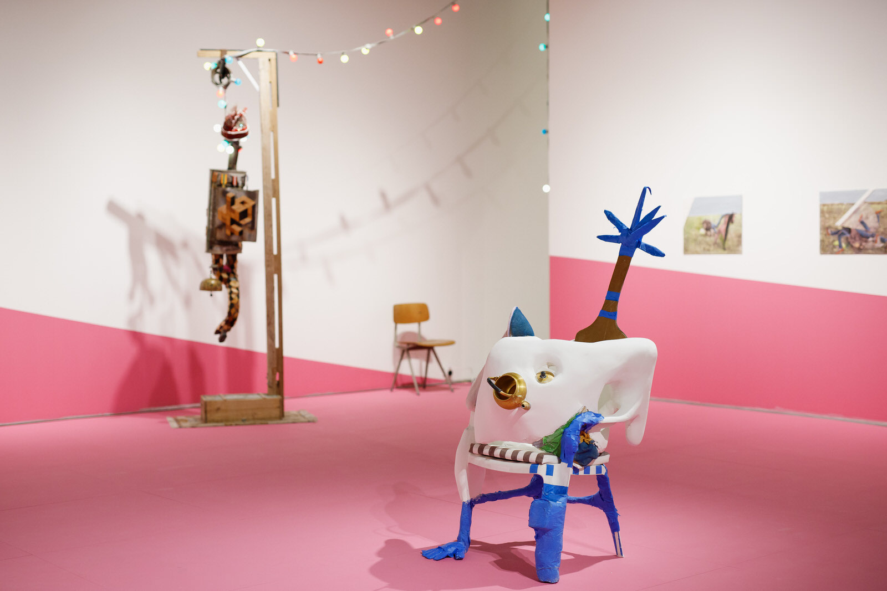
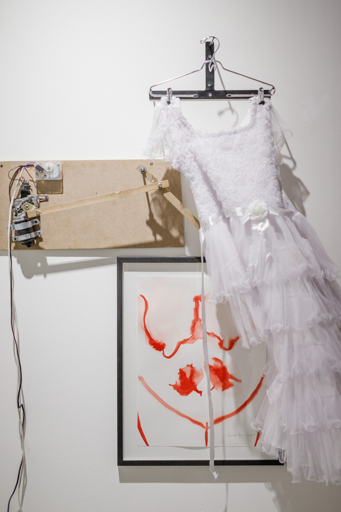
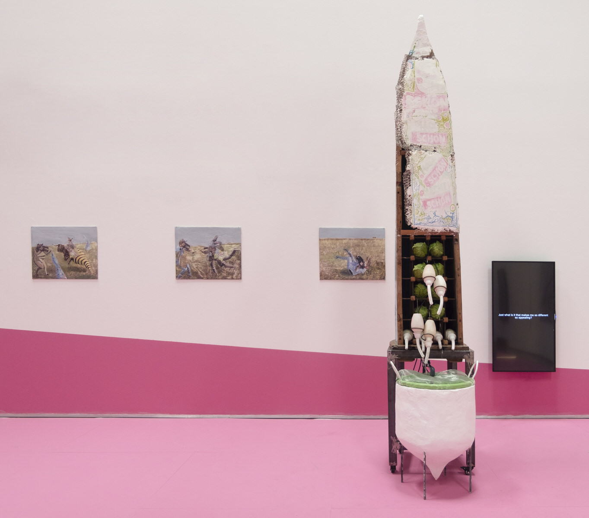
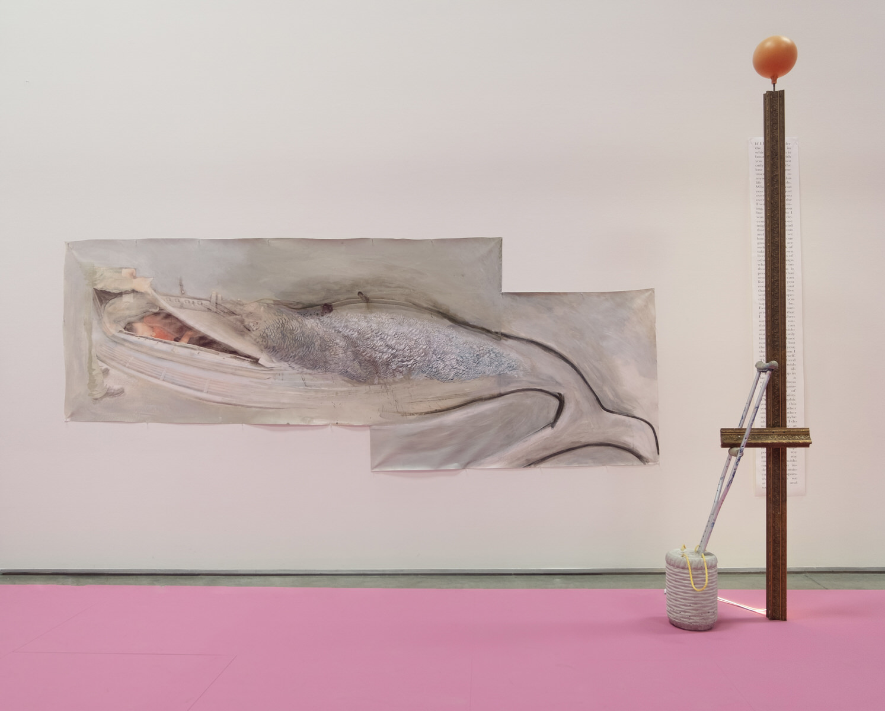
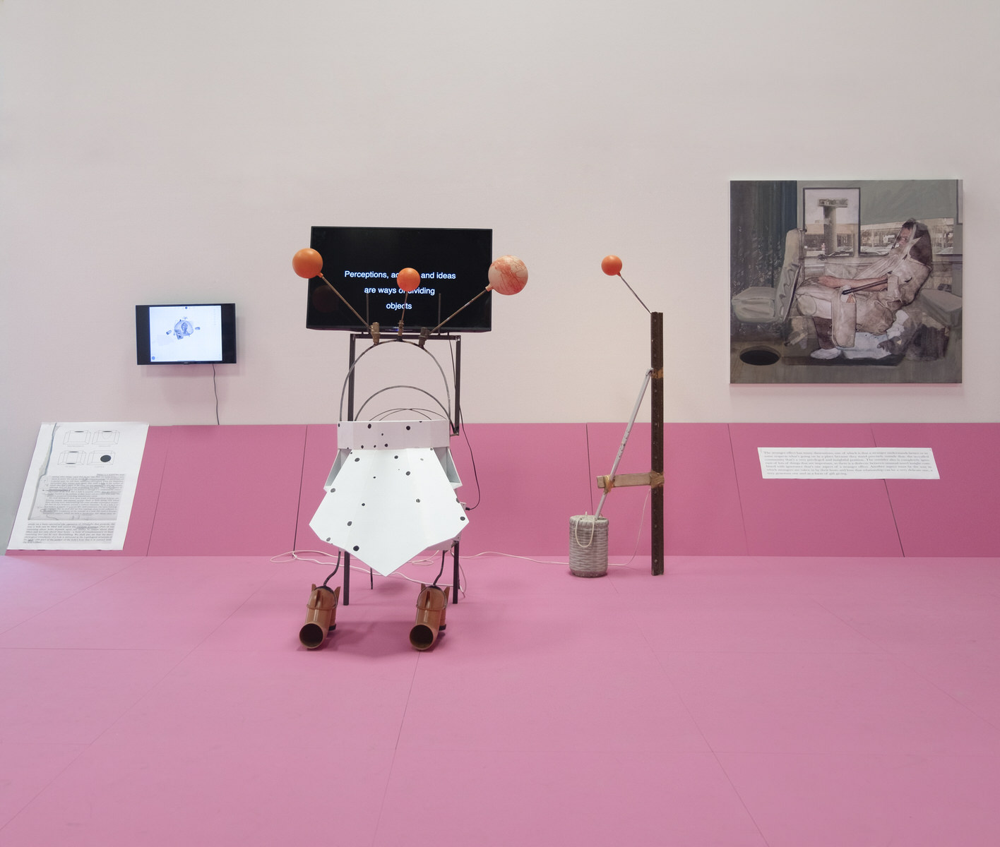

Over the summer, Ramin Haerizadeh, Rokni Haerizadeh, and Hesam Rahmanian disrupt existing art systems at Gallery Isabelle van den Eynde. 'We Are Open for Installation' sees the Dubai-based Iranian artist collective create a think-tank that pays its dues to the process of art making through a collaborative, ever-changing space. The trio discusses their art-as-life philosophy through manifesto-esque statements with introductions provided by Katrina Kufer, revealing a complex practice enriched by historical canons as much as spontaneous innovation
THE THEATRE OF LIFE
Endeavouring to ignite latent creative energies, brothers Rokni and Ramin Haerizadeh and Hesam Rahmanian have been following a self-prescribed ethos for the last decade, wherein art making is equivalent to breathing. Tackling themes such as hollow space, power, otherness, displacement, and destruction, their politically-charged yet contextually disengaged works exist in light of contemporary concerns—while carefully sidestepping dictating moral messages.
“It’s a performance, it’s a lifestyle, it’s a discipline we described 10 years ago and have been following since, from 5AM until 10PM. We don’t have days off, we keep working. We are trying to describe a soul, something independent from the city which is also inspired by the city, something between the private and the public, a home-studio-library-film set.”

Their dining table can turn into an impromptu panel or painting project; a gathering of friends into a spontaneous—albeit documented—foray into an Alan Kaprow-inspired Happening; or a plumber’s visit into a gestural-verbal concoction, resulting in an interpretation of ‘pouring’ as a brut, found-object sculpture.
“Two of the few procedures that we have defined in practice: one is the Pond of Language—projects built collaboratively with different people at different times, where there isn’t always a common language and a need for miming and mimicry. It’s a strategy based on free association—a project could land in many unexpected territories. The second procedure is Unfaithful Poems, a continuous project worked on with friends, is not literary or about translation. The aim is to take the poetry out of the context of specific time, location and space, and use only the theme of the original piece to create a poem more in tune with events of our time and personal experiences of those involved in the process. The result is not faithful or traditional—it is cooked up by people who each act as an ingredient to give it a new life.”
STRENGTH IN NUMBERS
The artists are not ‘Artists’—they produce artworks but engage in a collaborative approach that sees them work non-hierarchically alongside artists, carpenters, architects, writers, or friends in a form of “bottom-up” design.
“Judith Butler on ‘The Other’ is a main reference, where the space and the concept of calling myself ‘I’ is already decentered. We become Dastgah (‘machine’ in Farsi) to distantiate ourselves from the container and central figure of ‘artist’. We move forward collectively—highlight the contributions of others who sometimes occupy central roles and sometimes are marginal, but in either case, they bring with them a reality that interrupts our language and channels our attention to unexpected territories.”
Dastgah—also a Farsi term for a melodic matrix—is a means of creation.
“An important development in our practice has been our becoming of Dastgah, which are machines or systems incubated and materialised at times to explore the environments we provide for them. They rise from an assembly of objects that have come together by a series of experiences we have as our more subjective selves, and they become a more objective element in the process of making things, allowing us to re-explore the space we have created and once again add to it a new set of information. It is like navigating the complexities of being in the scene and describing the scene.”

ANTI-FETISHISM AND LIBERATION
We Are Open For Installation is a think-tank in the place of a white cube, where everyone is invited to become a Dastgah in the unlisted series of activities that accompany the ‘exhibition’. But there is no spectacle to be observed—it is full immersion in ideas, emotions, research, and radical gestures, more akin to a physical expression of a cognitive network.
“Using a white cube space as a humor; humor meaning where things don’t stick to any predefined structures, it provokes and keeps the space unpredictable. When people walk in a white cube space, they come with assumptions of a halo of fetishism for the art and the artists, however, when you encounter a pupating landscape here, it makes visitors more intimately connected to the works.”
Transparency disrupts the pristine nature of the gallery experience and liberates the artistic process from the constraints of traditional ‘success’ and ‘failure’ by treating it as a living entity, rather than the outcome of a preconceived thematic. But as everyone becomes potential Dastgah when a guiding concept and learned technical execution are replaced with an open and malleable approach, the further removed the work becomes from art world subjectivity. This gaze—from art market, dealer, audience, or creator—is a double-edged sword: in emancipation, integrity and value are arbitrarily heightened or compromised.
“When people participate in a process, we are already aware of the degradation of the quality, but to apply equality… it’s not market friendly. Our responsibility is to make things happen and be experimental.”

THE BEGINNING IS THE END IS THE BEGINNING
Their experimental methods incorporate spontaneity as much as Western historical canons. However, producing in Dubai from self-taught rather than institutional means has allowed them to formulate an artistic methodology on still fertile grounds.
“We come after Fluxus movement, which was a fantastic space of mind to negotiate with. But now in the 21st century, we are in a different stage of concerns for humanity and earth with a new space to embrace contradictions. We believe that we should not use the term ‘performance’ as the word drags a history along that has its own weight belonging to another geography and time. On the other hand, how we grew up, children of the revolution and Iran-Iraq war, we had to find people with knowledge and self-educate.
The urge of operating an act is different at its core. When it encounters historical phrases such as ‘performance’ or ‘installation’, it’s already considered as a secondhand thought in the Western cannon, so the entire activity seeps through the failure. We decided to name our procedures to stand more independently, relevant and close to here, where we come from. Therefore, from the first stage, there’s failure. It’s kind of Darwinian: you put the bucket of water somewhere and sometimes, you have a plants or mosquitos, but sometimes not.”

Taking all forms—from cross-dressing enactments to Francis Bacon-adjacent paintings in vivid hues—the organic development is not to be mistaken for chance visual cacophony. There is method to the madness, a natural ebb and flow that starts (or doesn’t) and ends (or doesn’t), much like the circle of life. But political nuances question the arbitrary art world conditions imposed upon this naturally occurring rhythm. Constantly weaving in Judith Butler’s concept of ‘The Other’, existing norms and traditions are subverted through their disloyal iterations that rethink physical and conceptual boundaries.
“It’s about otherness, how The Other is treated in historical canons. There’s a gap between your being and comprehension. You comprehend a work afterwards. You work on an idea but by the time you start to understand it, everything has changed.”
There is no end to a work—it grows rhizomatically in a constant state of fresh influx of ideas, adaptations, and formats. Their oeuvre exists as a spectrum.
A RETURN TO THE ARTIST
It is a rare privilege to gain access to the sparks of inspiration and research process that results in an artwork. The trio expose their artistic journey in the form of the objects and annotated readings that, though presented like ‘finished’ works, actually speak more of vague, disjointed beginnings than final painted or sculpted results.
“Everything that we start in this ecosystem is multidirectional. Our drive was to show our strategy of how we practice. Usually we bring terms from the West and translate them, and that translation ends up in mimicry, sometimes fruitful, sometimes not. So sometimes, we have to find terms which come from the locality here.”
Though they communicate with—rather than speak to—multitudes through the medium of making, there is isolation and a struggle in the balance between creative impetus and concrete results.
“Organically we reached ‘unwantedness’, which we keep feeling—whether applying for a visa or putting up an exhibition, there is unwantedness. Imagine, the belatedness of the printed newspaper. They are always a day late and give the news from the day before that we have already read on online platforms—it’s ‘soft paper and large size’ so it gets torn all the time and quickly finds other uses such as window cleaner or coaster or ‘cool’ gift wrapping. We feel that’s related to our time, this feeling that no one wants you. There is little interaction and thus no community, and we observe the problems of emerging artists going through this system of exclusion. Some say you have to adopt disinterestedness or a non-participatory role, and that will help you. We become robots.”
But in resistance against the system, they become machines—Dastgah—a Catch-22 that edges their practice forward.
“Each Dastgah carries out a continuous, repetitive act like a painting machine. We are looking at the system as a behaviour, it’s a start where you design something automatically and then over time it gains autonomy.”
PERFORMANCE WITHOUT SPECTATORSHIP
Their practice engages elements of 2D, 3D and performative expression with strong art historical tenets, but it is far from easily categorised. The line between object, art and person is fluid—the audience phenomenologically oscillates between ‘object’ and ‘creator’, all part of the same living flesh of an artwork.
“Instead of inviting an audience, you create it. You make people active as part of our process. In 2014, we used the term ‘performance’ for the way we became Dastgah, but then people asked us about the audience and the performance and started comparing us to a history which is not the position from which we rose. That’s why we started to say we have an audience which is arbitrary, our audience is a participant in our process.”
Their work is open and accessible—but not through traditional analytical means, and not geared towards a receiving audience. Rather, through active immersion. But once engulfed, it’s a fall down a rabbit hole where the ‘exit’ is not a departure, but a shift in understanding.
“Authorship is a problem while working with people in the art field—that’s usually what makes it stop. Looking at us, entering into the
Not all are prepared for the freefall—and those who are may negate the trio’s efforts at egalitarian creation. While their Pond of Language strategy may unlock dormant energies in non-creatives, the involvement of artists, writers, and architects who understand the historical context and in-progress conceptual reframing may inadvertently adopt theatricality—the ‘artist’ hat, actively inserting themselves into the role, rather than tumbling naturally into it.

THE INCUBATOR
In an experiment blending the public and private spheres of creation, this think-tank forces a reconsidering of the why, how, and what of art making. It will culminate in a formalised exhibition at Gallery Isabelle van den Eynde in September that harnesses the energies and activities over the months—seemingly contradicting the return to art production integrity at the core of the project. Though Dastgah have liberated themselves conceptually, they are weighed down by their imposed limitations, the system and their sense of unwantedness. There are deadlines to be met, new shows to be put on. We Are Open for Installation will freeze momentarily, but the shifting, rotating, transforming works continue their perpetual evolution.
“We look at it as a pulse, and it’s starting up again but in a different direction.”
We Are Open for Installation is open for installation at Gallery Isabelle van den Eynde until 16 September 2019, and will travel to London’s Hayward Gallery in 2020.
About Katrina Kufer
Katrina Kufer is an arts and culture writer based in Dubai with a BFA from Parsons The New School for Design (Paris/New York) and MA in Contemporary Art from Sotheby's Institute of Art (London). Following gallery and art educator positions in Paris, Singapore, and Dubai, Katrina worked as Assistant Editor at Canvas, the Middle East’s longest standing arts and culture magazine, and is currently Contributing Editor for Harper’s Bazaar Art and Harper’s Bazaar Interiors. Traveling regularly around the Middle East and Europe, she has contributed to publications including Artforum, Frieze and The Art Newspaper, as well as independent artist catalogues and book projects.
* We Are Open For Installation, 2019, Installation View, Courtesy the artist and Gallery Isabelle van den Eynde.
 We Are Open For Installation is a think-tank in the place of a white cube. […] But there is no spectacle to be observed—it is full immersion in ideas, emotions, research, and radical gestures, more akin to a physical expression of a cognitive network.
We Are Open For Installation is a think-tank in the place of a white cube. […] But there is no spectacle to be observed—it is full immersion in ideas, emotions, research, and radical gestures, more akin to a physical expression of a cognitive network.